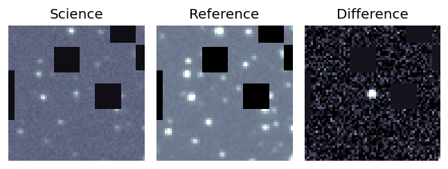
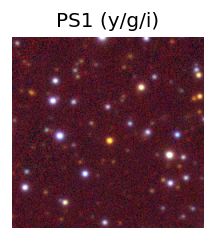
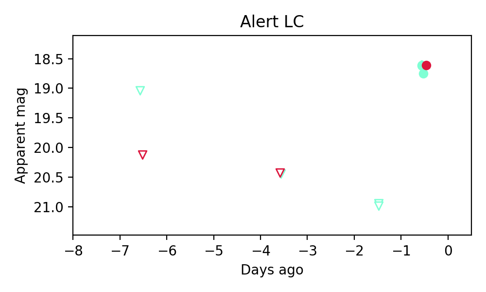
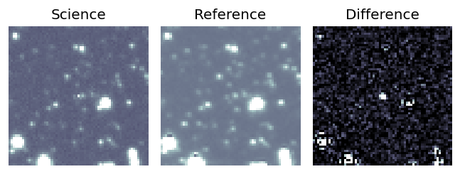
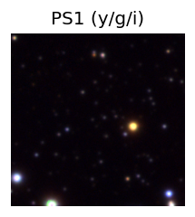
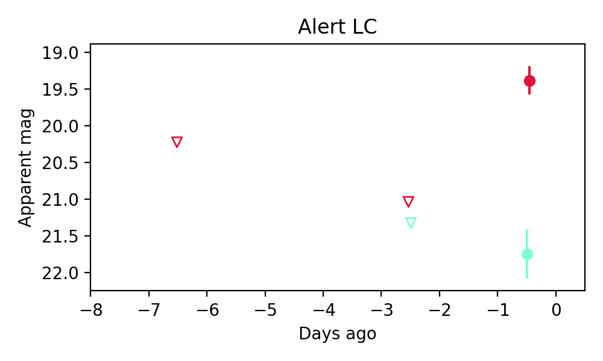
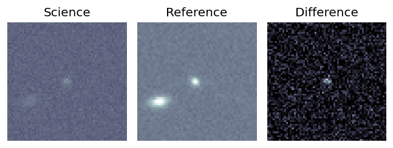
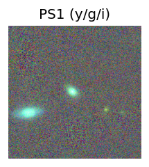
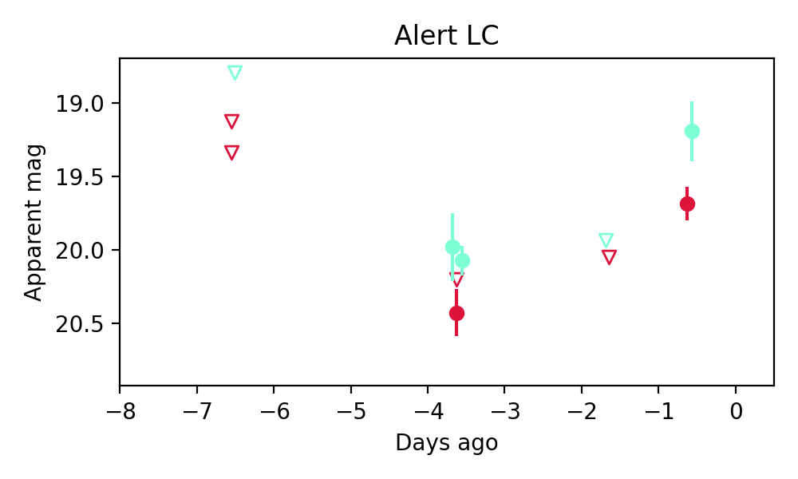

Candidate List 20250606Previous Day Next Day
Section 1: New Sources (age<1d) Section 2: Old (1-5d) sources observed last nightplaceholder
Section 1: New Afterglow/FBOT Cands Last Night (2)
1. ZTF25aatyszx (Afterglow?) [Back to Top] [Share] [Trigger Swift] [Fritz] [Lasair]RA, Dec: 276.44442, 7.16827 18h25m46.66s, 7d10m5.79sGalactic (l, b): 36.44366, 8.94932 ext(g-r) = 0.283
PS1: 1 source in 3 arcsec Closest: d = 3.03 arcsec photoz=1.13+/-0.13 peak abs mag = -26.77
LegacySurvey: 0 sources in 3 arcsec

Extinction-corrected gr color:
From alerts: -0.2 +/- 0.07 mag
Rise Rate:
g: 2.56 mag/day
r: 0.58 mag/day
i: -99 mag/day
Fade Rate:
g: 4.23 mag/day
r: -99 mag/day
i: -99 mag/day
2. ZTF25aauaslw (Afterglow?) [Back to Top] [Share] [Trigger Swift] [Fritz] [Lasair]RA, Dec: 287.60724, 18.29671 19h10m25.74s, 18d17m48.15sGalactic (l, b): 51.35811, 4.19844 ext(g-r) = 1.225
PS1: 0 sources in 3 arcsec
LegacySurvey: 0 sources in 3 arcsec

Extinction-corrected gr color:
From alerts: 1.14 +/- 0.39 mag
Consistent with synchrotron, g-r>0!
Rise Rate:
g: -99 mag/day
r: 0.79 mag/day
i: -99 mag/day
Fade Rate:
g: -99 mag/day
r: -99 mag/day
i: -99 mag/day
Section 2: Older Sources Observed Last Night (1)
0. ZTF25aatyqbi (FBOT?) [Back to Top] [Share] [Trigger Swift] [Fritz] [Lasair]RA, Dec: 210.38723, 51.01124 14h 1m32.94s, 51d 0m40.45sGalactic (l, b): 98.55628, 62.66992 ext(g-r) = 0.014
PS1: 0 sources in 3 arcsec
LegacySurvey: 0 sources in 3 arcsec

Extinction-corrected gr color:
From alerts: -0.51 +/- 0.23 mag
Rise Rate:
g: 0.67 mag/day
r: 0.36 mag/day
i: -99 mag/day
Fade Rate:
g: -99 mag/day
r: -99 mag/day
i: -99 mag/day